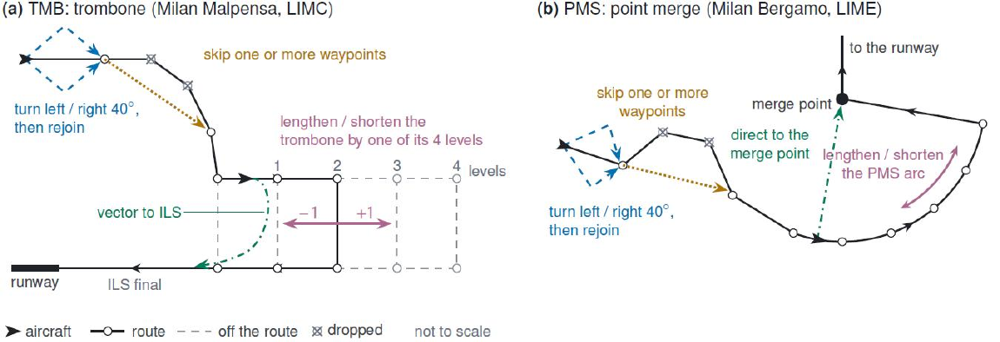
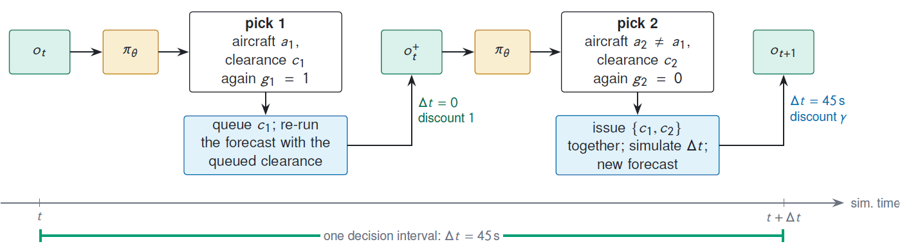

Actions and reselection¶
Summary
A decision is a pair, (aircraft, clearance), drawn from a discrete set of 15 clearances.
There are two sets, one per procedure: v2 for the trombone and v2pms for point merge. They
differ in the clearances that work on the delay-absorption structure. Masks remove every
choice that cannot be flown before the policy samples. The policy picks the aircraft first,
then a clearance for that aircraft, then decides whether to pick again. With
reselection it can clear a second aircraft inside the same 45 s interval, after seeing the
forecast effect of the first clearance.
Source: single-agent/actions/ (actions_v2.py, actions_v2pms.py, action_mask_v2.py,
action_mask_v2pms.py, action_set.py), single-agent/network/autoregressive_policy.py,
single-agent/atc_env/windowed_env.py.
What a decision is¶
The action is a triple of integers, (aircraft, clearance, again):
- aircraft: one of the 10 window slots;
- clearance: one of 15 clearances, to be applied to the aircraft in that slot;
- again: 1 to request another pick before simulated time advances, 0 to execute now.
The action space is MultiDiscrete([10, 15, 2]). The third component exists when reselection is
enabled (TADA_MAX_PICKS=2), as it is for both published policies.
The two clearance sets¶
Clearances depend on the procedure, so each published policy has its own set. Both sets have 15 entries and share the slot numbers, which keeps the network the same size for both procedures.

| # | clearance | effect | TMB (v2) |
PMS (v2pms) |
|---|---|---|---|---|
| 0 | DO_NOTHING |
no command; the aircraft keeps its speed and route | yes | yes |
| 1 | SLOW_DOWN_SMALL |
target speed −10 kt | blocked by the airport mask | yes |
| 2 | SLOW_DOWN_MEDIUM |
target speed −20 kt | yes | yes |
| 3 | SLOW_DOWN_LARGE |
target speed −30 kt | yes | yes |
| 4 | SPEED_UP_SMALL |
target speed +10 kt | yes | yes |
| 5 | SPEED_UP_MEDIUM |
target speed +20 kt | blocked by the airport mask | yes |
| 6 | TURN_LEFT_AND_RETURN_TO_ROUTE |
40° left for 10 NM, then rejoin | yes | yes |
| 7 | TURN_RIGHT_AND_RETURN_TO_ROUTE |
40° right for 10 NM, then rejoin | yes | yes |
| 8 | LENGTHEN_TROMBONE |
add one trombone level | yes | never legal |
| 9 | SHORTEN_TROMBONE |
remove one added trombone level | yes | never legal |
| 10 | SKIP_1_WAYPOINT |
drop the next waypoint | yes | yes |
| 11 | SKIP_2_WAYPOINTS_NOT_NEXT |
keep the next waypoint, drop the 2 after it | yes | yes |
| 12 | SKIP_3_WAYPOINTS_NOT_NEXT |
keep the next waypoint, drop the 3 after it | yes | yes |
| 13 | SKIP_4_WAYPOINTS_NOT_NEXT |
keep the next waypoint, drop the 4 after it | yes | yes |
| 14 | VECTOR_TO_ILS (TMB) / DIRECT_TO_MERGE_POINT (PMS) |
leave the structure for the final approach | vector to ILS | direct to merge point |
"Yes" means the clearance belongs to the set that the published policy uses. Whether it is legal for a given aircraft at a given moment is decided by the masks.
The two sets differ in three slots:
- Slot 14 is
VECTOR_TO_ILSon the trombone andDIRECT_TO_MERGE_POINTon point merge. - Slots 8 and 9 lengthen and shorten the trombone. They have no meaning on point merge and are never legal there. They keep their slots and names so that both sets have the same width.
- The starting route differs. A trombone flight starts on the short AMAN route and is delayed by lengthening the trombone. A point merge flight starts with its whole sequencing leg and is taken off it by the direct-to (The problem).
The speed, turn and skip clearances are the same code in both sets.
The set is chosen by the environment variable TADA_ACTION_SET (v2 or v2pms, default v2),
which is read when the code is imported. A model records its set in run_meta.json, and loading
it under the other set stops with an error that names the variable to change. The design history
of the set, including an earlier one with 22 clearances, is in the
Research notes.
What each clearance does¶
Do nothing. No command is issued. The aircraft keeps its current speed and route. It is free: only real clearances carry the action cost.
Change speed. The clearance moves the aircraft's target speed by −10, −20, −30, +10 or +20 kt. There are three steps down and two up. A slow-down is legal when the new target stays at or above the aircraft's minimum speed. A speed-up is legal when the new target stays at or below its maximum speed and does not exceed the target speed of the next waypoint.
Turn and rejoin. The aircraft leaves its route on a heading 40° to the left or right of its
target heading, flies that heading for the time it takes to cover 10 NM, and then resumes the
route towards the same next waypoint. The clearance delays the aircraft and moves it sideways,
which makes it the tool for opening lateral spacing. A turn is legal when the leg is flyable: from
the end of the 10 NM leg, the turn back to the next waypoint is at most 90°, and the track change
at that waypoint is at most 95°. The direction convention of this test is selected by
TADA_TURN_MASK_FIX; a model's run_meta.json decides the setting when the model is loaded, and
the published policies use the default. The rejoin is a command scheduled for later, so a decision
step that issues a turn lasts until the rejoin plus the usual 45 s.
Lengthen or shorten the trombone (TMB). Lengthen adds one level to the downwind leg: one waypoint outbound and its partner inbound. It can be repeated up to the trombone's four levels and is legal while the aircraft has not passed the point where the next level begins. Shorten removes the most recently added level and is legal while that level is still entirely ahead of the aircraft. The two are exact inverses. Shortening cannot go below the short AMAN route.
Skip waypoints. SKIP_1_WAYPOINT drops the next waypoint, so the aircraft flies direct to the
one after it. The other three keep the next waypoint and drop the 2, 3 or 4 that follow it. A skip
is legal when at least four waypoints remain beyond the point where the route is rejoined and the
track change there is at most 95°. A skip shortens the route when the dropped waypoints formed a
detour.
Vector to ILS (TMB). The aircraft's route is replaced by its last four waypoints, which takes it off the downwind leg and onto the final approach. It is legal once the aircraft is on the trombone and has not yet started the leg back towards the airport, subject to the same 95° limit.
Direct to merge point (PMS). The aircraft leaves the sequencing arc and flies to the merge point, then continues on the rest of its route. It is legal while the aircraft is on its sequencing leg: it has passed the arc point where its leg begins, and only arc points lie between it and the merge point.
Every route clearance (turn, skip, lengthen, shorten, vector to ILS, direct to merge point) also requires more than four waypoints left in the route.
The procedure airport mask¶
An optional mask can block clearances for a whole procedure. It is selected with
TADA_AIRPORT_MASK and defined in AIRPORT_MASKS in single-agent/actions/action_set.py. The
one mask defined there is called procedure.
For the trombone set it blocks two clearances at Malpensa:
SLOW_DOWN_SMALL(−10 kt);SPEED_UP_MEDIUM(+20 kt).
The published TMB policy was trained and is evaluated with this mask, so its speed clearances are
−20 kt, −30 kt and +10 kt. The mask is combined with the legality mask below by a logical AND. If
that leaves an aircraft with no legal clearance, DO_NOTHING is made legal again.
The published PMS policy uses no airport mask (AIRPORT_MASKS also has a row for v2pms, which
that policy does not use). A model's mask is recorded in its run_meta.json together with the
clearance set, and loading the model under a different mask stops with an error.
Masking¶
Masks decide what can be sampled. They serve two purposes: they keep commands that cannot be flown out of the simulator, and they keep the learning algorithm from spending probability on choices that the environment would reject or ignore. The masks are not an oracle. They test whether a clearance can be executed, not whether it is a good idea.
The observation carries three masks:
| mask | shape | allows |
|---|---|---|
mask_action_per_ac |
10 × 15 | the clearances that are legal for each slot |
mask_select |
10 | the slots that may be picked at this pick |
mask_again |
1 | whether another pick may be requested |
Clearance mask. A row starts from the rules in the previous section: aircraft speed limits, waypoint constraints, route geometry and what is left of the delay-absorption structure. Four further rules apply:
- A flight that the forecast puts in a conflict within the
next 2880 s cannot be left alone:
DO_NOTHINGis removed from its row. - A pending flight, which has not entered the terminal area,
can only be given
DO_NOTHING. - A released flight that is shown at the tail of a stream can only be
given
DO_NOTHING. - A flight that was already cleared in this decision interval can only be given
DO_NOTHINGuntil the clock moves.
Selection mask. Only flights under control that have not yet been cleared in this decision
interval can be picked. If no flight in the window is under control, any occupied slot can be
picked, and its only legal clearance is DO_NOTHING.
Again mask. Another pick can be requested only if the pick budget is not used up (two picks per interval) and another aircraft would still be available to clear.
The policy reads the masks from the observation and applies them to its logits before sampling, and again when the learner evaluates the stored actions. A masked choice is never sampled.
Sampling an action¶
An action is sampled in three stages. Each stage is conditioned on the stages before it, and each is masked to what is legal at that point.
- Which aircraft. The aircraft head scores every slot. The selection mask is applied and one slot is sampled.
- Which clearance. The clearance head scores the 15 clearances for the chosen aircraft. That aircraft's row of the clearance mask is applied and one clearance is sampled. Conditioning on the aircraft matters because two aircraft in similar states can have very different legal clearances.
- Again? A binary flag is sampled, conditioned on the chosen aircraft and clearance. It is
forced to 0 when the again mask is off or the clearance is
DO_NOTHING.
The probability of the action is the product of the three stages:
In deterministic mode every stage takes its most likely choice instead of sampling. The network that produces the scores is described on Policy network.
Reselection¶
With one clearance per 45 s the agent cannot act on two flights that both need a clearance now. Reselection lets it clear up to two aircraft in one decision interval, and lets the second choice depend on the first.

The steps inside one decision interval are:
- From the observation
o, the policy picks an aircraft and a clearance(a1, c1)and sets the again flagg1. - If
g1 = 0, orc1isDO_NOTHING, the clearance is executed and the live world advances 45 s. This is an ordinary one-pick step. - If
g1 = 1, the clearance is queued. The live clock does not move. The no-operation rollout is recomputed with the queued clearance applied, and the policy receives a new observationo+. In it, aircrafta1is flagged as cleared in this interval, and all predictions include the effect ofc1. - From
o+the policy picks a second pair(a2, c2)witha2 ≠ a1. The again flag is now forced to 0, because the budget of two picks is spent. - Both clearances are executed together and the live world advances 45 s.
The environment never offers a second pick on its own: only the policy asks for one.
In the diagram, flights 4 and 6 both need a clearance. The first pick asks for another: its clearance is queued and the forecast is re-run with it, so the second pick already sees flight 4 slowed. The second pick ends the interval. The flight numbers and clearances are illustrative.
This design has two advantages over a joint action. It adds decision bandwidth without building a combinatorial space of clearance pairs: the network still has one aircraft head and one clearance head. And the second decision is conditional on the forecast effect of the first, where two independently sampled clearances could work against each other.
The zero-time transition¶
A queued pick is a transition of the decision process like any other: it has an observation, an action, a reward and a next observation. It differs in that it consumes no simulated time. Two consequences follow.
Its discount is one. In a semi-Markov decision process a transition that lasts a time τ is
discounted by γτ. With τ = 0 the factor is exactly 1. Applying the ordinary per-step
discount γ would decay the reward artificially each time the policy asked for a second pick, and
would skew the critic's value estimates. Equivalently, the two picks can be seen as one temporally
extended action, an option: the policy picks (a1, c1), optionally re-selects (a2, c2) after
the forecast, and the option ends when the 45 s step has been executed.
Its reward contains no outcome. Nothing moves, so nothing can land and no conflict can occur.
The reward of a queued pick is the action cost of its clearance (0.006) plus the change in the
shaping potential, Φ(o+) − Φ(o), taken with discount 1. The ordinary transition that follows uses
γ Φ(o′) − Φ(o+) with γ = 0.998. Because the shaping uses the same per-transition discount as the
learner, it still sums to a difference of potentials over an episode
(Objective and reward).
In the code, the environment marks a queued pick with info["zero_time"] = True, and the learner
in single-agent/jax_ppo/ppo.py discounts that transition by 1 in the advantage recursion and in
the bootstrap at truncation. single-agent/tests/test_multi_pick.py checks that the environment
with the again flag always 0 reproduces the one-pick environment exactly, that the masks hold at
every pick, and that the shaping telescopes under the per-transition discount.
Reselection is enabled with TADA_MAX_PICKS=2, read at import because it adds the again flag to
the action, the two masks to the observation, and one per-aircraft feature ("cleared in the
current decision interval", see Observations). Its measured effect during
development is in the Research notes.